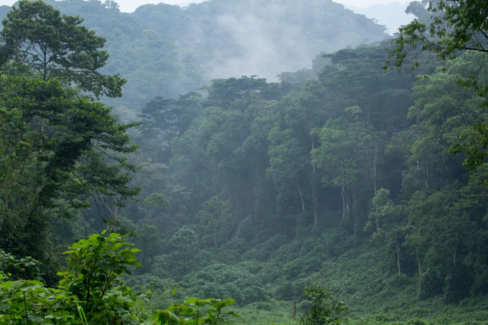
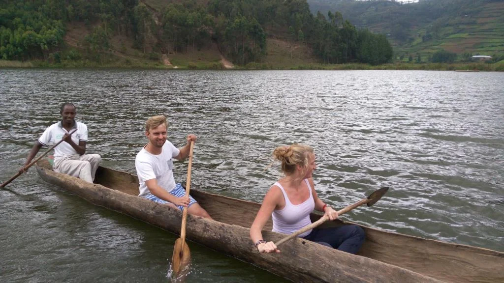

Uganda Tours From the UK
Popular UK itineraries often combine Bwindi, Queen Elizabeth, and Lake Bunyonyi for a balanced Uganda tour with wildlife, gorillas, and scenic downtime.
Explore Uganda
From lush rainforests to safari parks, discover the best Uganda destinations for travellers arriving from the UK, USA, Germany, Canada, Australia, and other long-haul source markets.
These destination ideas align with the ways travellers commonly search, from Uganda tours from the UK to Uganda gorilla trekking from the USA and Uganda safari holidays from Germany.
Popular UK itineraries often combine Bwindi, Queen Elizabeth, and Lake Bunyonyi for a balanced Uganda tour with wildlife, gorillas, and scenic downtime.
US travellers frequently focus on Bwindi Impenetrable National Park, then extend into Kibale for chimpanzees or Queen Elizabeth for a broader primate and safari circuit.
Germany-based demand often maps well to Murchison Falls, Queen Elizabeth, and Lake Mburo for classic Uganda safari landscapes, big game drives, and boat trips.
Canadian travellers often look for longer Uganda holidays that combine national parks with softer scenic stops like Lake Bunyonyi and cultural time in Kampala.
Australian visitors often lean toward Bwindi, the Rwenzoris, Jinja add-ons, and multi-activity itineraries that make a long-haul journey worthwhile.

Home to mountain gorillas, dense rainforest, and unique wildlife experiences.

Experience the mighty Murchison Falls, boat safaris, and diverse wildlife.

A serene and scenic lake surrounded by hills and local villages, perfect for relaxation and cultural experiences.

One of Uganda’s most popular parks, home to tree-climbing lions and a wide range of wildlife.

Known for its incredible primate population, including chimpanzees, and lush tropical forest.

A compact safari park known for zebras, antelopes, scenic lakes, and relaxed wildlife experiences.

Home to dramatic mountain scenery, alpine trails, waterfalls, and unforgettable highland adventures.

Uganda’s lively capital offers cultural landmarks, local markets, nightlife, and modern city experiences.